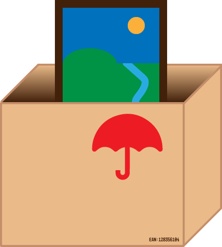
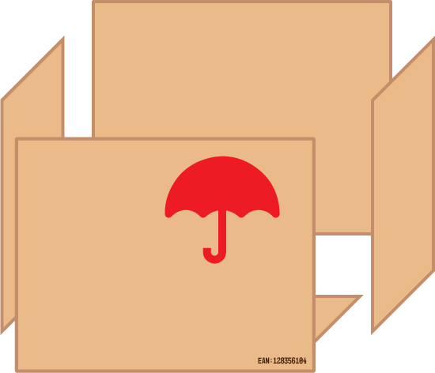
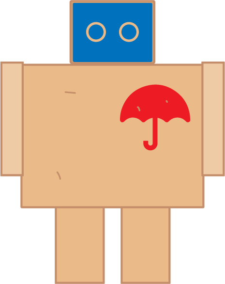
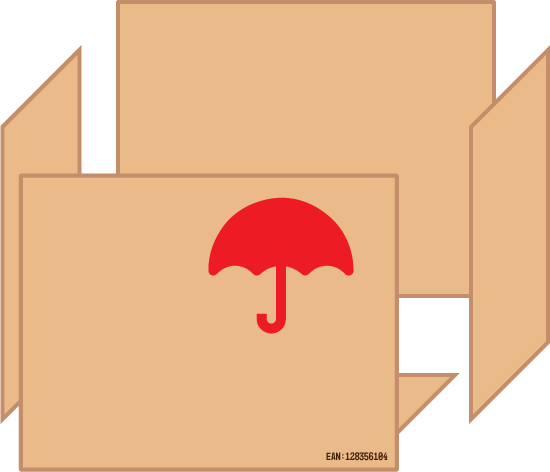
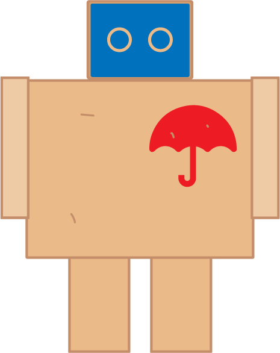

Hoe wordt het gemaakt?
Elke bewaker start zijn leven als een beschermingsdoos.
Vervolgens wordt de doos uit elkaar gehaald.
Tot slot worden de onderdelen gemaakt in een geweldige poppetje.
Elke bewaker start zijn leven als een beschermingsdoos.
Vervolgens wordt de doos uit elkaar gehaald.
Tot slot worden de onderdelen gemaakt in een geweldige poppetje.